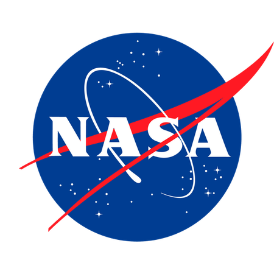
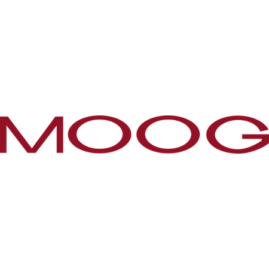

I will return to the Robotic Systems Technology Branch at NASA's Johnson Space Center as a Graduate Pathways Intern in January 2024.
|  |
NASA (ER4 Robotic Systems Technology Branch)Awards: JSC Co-op Award (Center-level)During the summer of 2023, I returned to ER4's Dexterous Robotics team to complete my final rotation as an undergraduate NASA Pathways Intern. I led the software development for one of our team's major deliverables, a demonstration of a robotic manipulator wiping a MERLIN freezer seal. I wrote ROS 2 action servers, clients, and messages for perception, motion planning, and a graphical user interface (GUI) and successfully demonstrated the full task sequence on hardware at the end of the summer. |
NASA (ER4 Robotic Systems Technology Branch)Awards: Shining Star Intern Award (Agency-level), JSC Co-op Award (Center-level)I completed my first software engineering and robotics internship during my second rotation as a Pathways Intern in the fall of 2022. My primary tasking was learning ROS 1 and ROS 2; then, using that knowledge, I used a ROS 1/ROS 2 bridge to create a single simulation of a mobile base and robotic manipulator. I also worked on a trade study of that same mobile base and robotic manipulator. |
|
Apple (iPad Touch Sensing Hardware Team)During the summer of 2022, I worked on Apple's Touch Sensing Hardware team on multiple projects related to electronics packaging. These projects included test fixture design, the development of test procedures, test equipment selection, analysis of FEA data, and electromechanical device modeling. |
|
NASA (CI5 Environmental Systems Branch)I completed my first and rotation as a Pathways Intern at NASA's Johnson Space Center in the spring of 2022. During my internship in CI5, my most impactful project was writing a parser and translator in Python that would automatically generate Mission Control displays for Artemis II and beyond. I also completed a data analysis project, a documentation project, and much of the training required to become a certified Flight Controller. |
|  |
Moog (Aircraft Group)Public ReleaseDuring the summer of 2021, I worked under the mentorship of a Packaging Engineer in Moog's Aircraft Group. I contributed to the development of the Battery Management Unit (BMU) and the Battery Module (BM), two avionics boxes for fully-electric commercial aircraft. I completed four projects: the design and drafting of a test fixture for a printed wiring board (PWB), the design and drafting of a vibration fixture for the BMU, designing solutions to an assembly alignment issue, and creating a thermal simulation of the BM. |